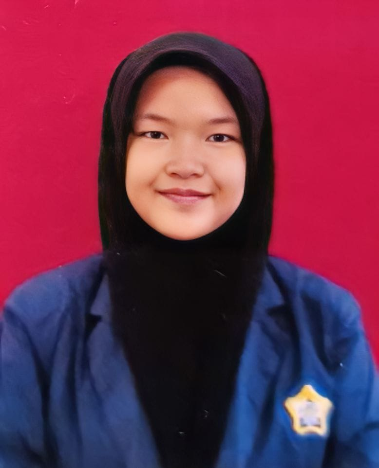

Hafizah Nurul Izzati
About Me: Merupakan anak ke 4 dari enam bersaudara,sedang menempuh pendidikan di perguruan
tinggi negeri di provinsi bengkulu. Aktif mengikuti kegiatan kemasyarakatan,sosial,dan kepemudaan.
Berpengalaman sebagai panitia di berbagai project organisasi,menjadi delegasi bengkulu dalam forum bawa ide, merupakan duta inspirasi provinsi bengkulu, serta merupakan alumni pondok pesantren di
bengkulu. Pernah menerbitkan buku diusia 17 tahun, mengikuti kegiatan nasional maupun lokal.
- Founder Kelas Interaksi - (2023-sekarang)
- Mahasiswa Universitas Bengkulu - Universitas Bengkulu (2023-sekarang)
Mahasiswa
- S1 ILMU HUKUM - Universitas Bengkulu (2023-sekarang)
Organizations & Volunteering Experiences
- WAMI FH UNIB - Bendahara Umum (2023-sekarang)
- RADERLS FH UNIB - Wakil Ketua Umum (2023-sekarang)
Skills
- Public Speaking
- Memasak
- Menulis